Problema
O acompanhamento de alimentação, sono e evacuação costuma ficar em papel, planilhas ou aplicativos separados. Isso torna os registros pouco padronizados e dificulta a análise conjunta das informações.
Portfólio acadêmico · Estágio em Engenharia de Software
O VivaBem é um aplicativo móvel para registrar alimentação, sono e evacuação, organizar o histórico e apoiar o acompanhamento profissional.
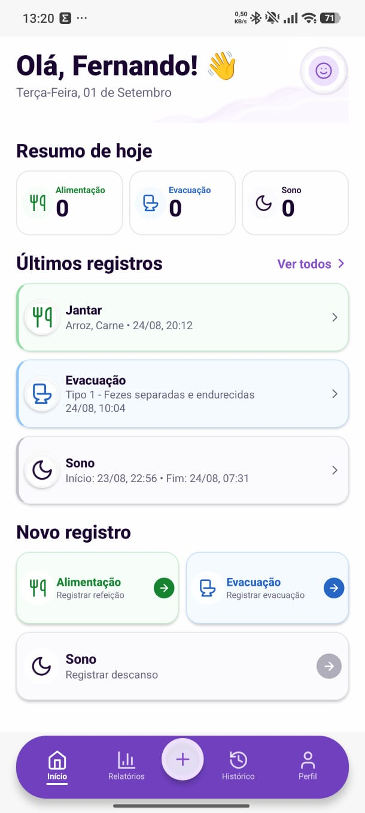
01 · Sobre o projeto
O acompanhamento de alimentação, sono e evacuação costuma ficar em papel, planilhas ou aplicativos separados. Isso torna os registros pouco padronizados e dificulta a análise conjunta das informações.
Centralizar os dados da rotina de saúde intestinal em uma experiência móvel simples, organizada e acessível, com histórico estruturado e apoio à geração de relatórios.
Aplicativo móvel Android em React Native e Expo, comunicando-se por API REST com backend em C# e .NET. A persistência é relacional em PostgreSQL, em uma organização por camadas.
02 · Casos de uso e cronograma
Estado consolidado a partir do Relatório de Estágio atualizado e das evidências do 3º bimestre.
SUC 01
Permite registrar, consultar, editar e excluir refeições, alimentos consumidos, data, horário e observações.
SUC 02
Permite registrar e acompanhar evacuações, incluindo data, horário, características observadas e notas complementares.
SUC 03
Registra horários de deitar, despertar e levantar, além de qualidade, fadiga, interrupções e observações.
SUC 04
Permite criar, editar, ativar, desativar, testar e excluir lembretes locais para os registros diários.
SUC 05
Consolida registros do usuário em indicadores e gráficos para apoiar a identificação de padrões e o acompanhamento profissional.
| Caso de uso | Referência temporal | Situação atual | Evidência |
|---|---|---|---|
| Gerenciar alimentação | Concluído em jun/2026 | Concluído | Especificação, diagramas e telas do 3º bimestre |
| Gerenciar evacuação | Concluído em jun/2026 | Concluído | Relatório atualizado, diagramas e telas |
| Gerenciar sono | Evidenciado em set/2026 | Concluído | Relatório atualizado, diagramas e telas |
| Gerenciar notificações | Evidenciado em set/2026 | Concluído | Especificação, diagramas e telas do 3º bimestre |
| Gerenciar relatórios | Previsão original: out/2026 | Previsto | Relatório atualizado o registra como trabalho futuro |
A previsão de agosto para relatórios pertence ao planejamento inicial. O Relatório de Estágio atualizado registra esse caso de uso como a etapa ainda prevista, por isso a tabela apresenta o estado real, e não a previsão original como concluída.
03 · Documentação
As prévias abaixo foram obtidas dos arquivos do projeto. Cada cartão oferece acesso ao arquivo original no Google Drive.
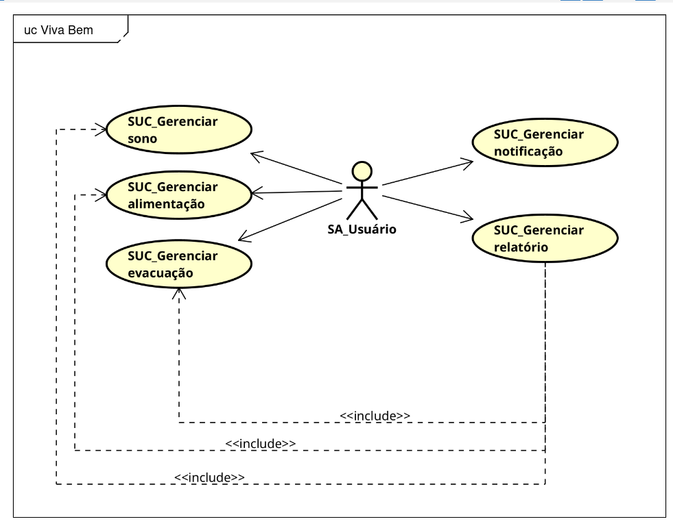
Diagrama de casos de usoVisão global · arquivo original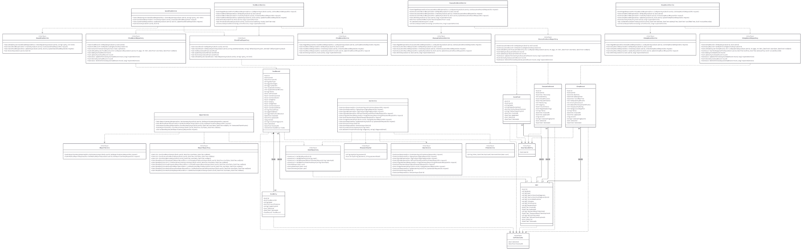
Diagrama de classesPNG original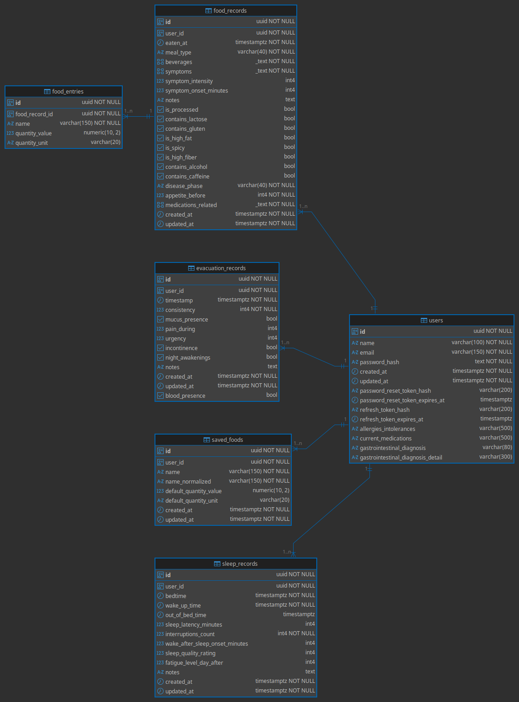
Entidade-relacionamentoDER · PNG original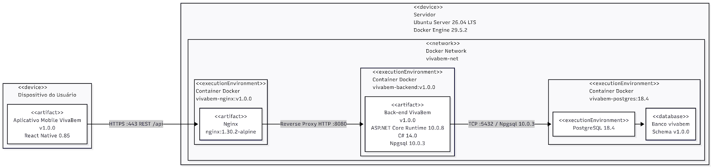
Diagrama de implantaçãoPDF original Workflow AS-ISArquivo PDF originalAbrir arquivo ↗04 · Telas e vídeo
Capturas organizadas pelos módulos presentes no material do 3º bimestre.
Tela principal
Resumo dos registros recentes, contagens do dia e atalhos para alimentação, sono e evacuação.
Módulo de registros
Fluxo de registro alimentar, detalhes da refeição e histórico filtrável por período.
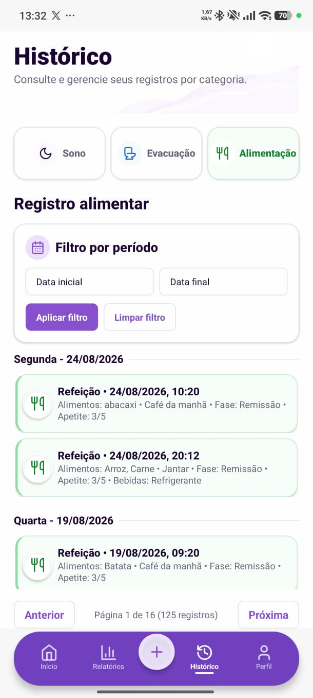
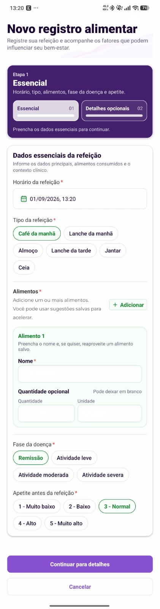
Módulo de registros
Registro de horários, qualidade, interrupções e histórico de sono.
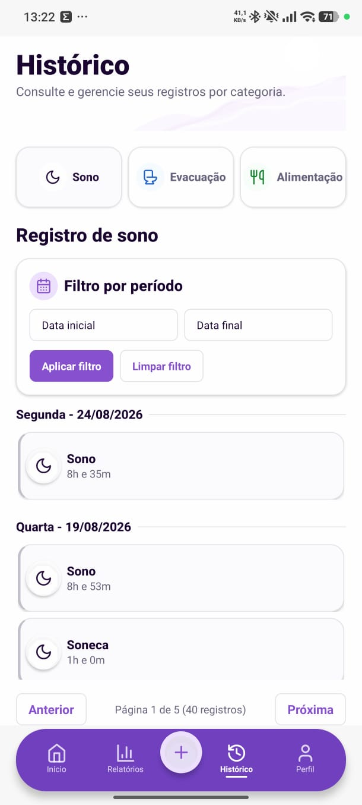
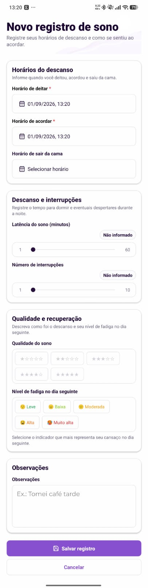
Configurações
Criação e controle de lembretes para os registros diários.
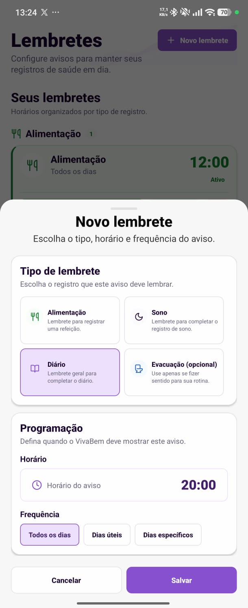
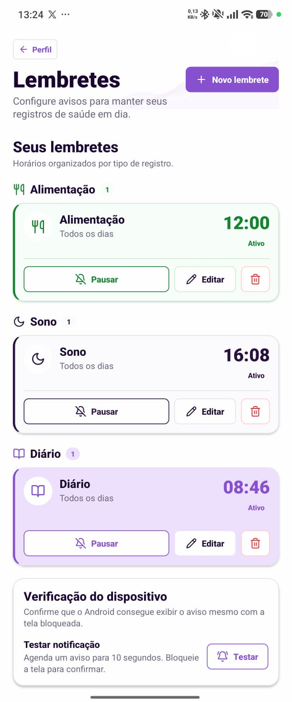
Módulo de registros
Registro das características observadas e histórico por período.
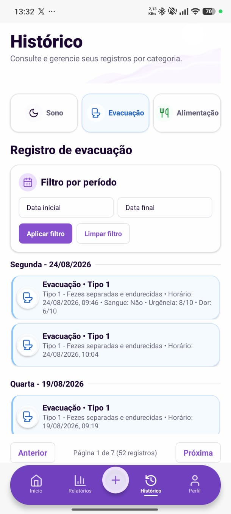
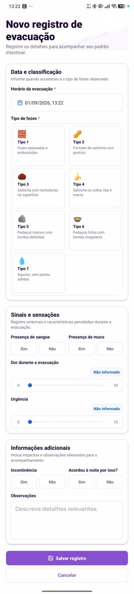
Demonstração audiovisual
Gravação real do sistema, disponível na pasta telas do 3º bimestre. A duração verificada é de 1 min e 44 s.
Abrir vídeo no Google Drive ↗05 · Relatório de estágio
O arquivo original estava disponível em formato DOCX no Drive. Esta versão em PDF foi gerada sem modificar a fonte original e está pronta para visualização ou download.
06 · Identificação